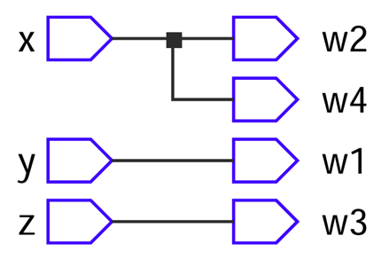

module four_wires( input ,y,, w1,w2,w3,w4 ); assign = y; assign w2 = ; w3 = z; assign w4 = ; endmodule 1. Which keyword is used to declare ports in Verilog code that receive external signals? 2. Which keyword is used to declare ports in Verilog code that sending signals to the external environment?